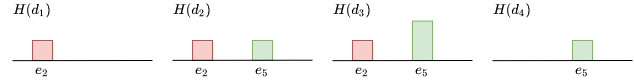
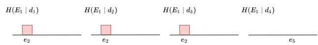

[DRAFT] Inverted Indexing in Histogram Model
by Sergei Papulin (papulin.edu@gmail.com)
Contents
Introduction
TODO
It's crucial for information retrieval engines to build indexing to reduce search space and retrieve only a fraction of all available data instances.
 Figure 1. Indexing and search flows
Figure 1. Indexing and search flows
Histogram Model
As shown here, the histogram algebraic system can be written as follows
H=⟨HG,∩,∪,∧,∨˙,∨,\˙,∖,−,0,1⟩,where constants are defined as
0=H0=(h(e1),⋯,h(en)∣h(x)=0,x∈U)1=H1=H(d)=(h(e1),⋯,h(en)∣h(x)=h(x∣d),x∈U,x∈U∑h(x)=1)There are two types of operations: set and logical.
Set operations are defined as follows
H1∪H2=(h(e1),⋯,h(en)∣h(x)=max(h(x∣X1,d),h(x∣X2,d))).
H1∩H2=(h(e1),⋯,h(en)∣h(x)=min(h(x∣X1,d),h(x∣X2,d))).
H1∖H2=(h(e1),⋯,h(en)∣h(x)={h(x∣X1,d)ifh(x∣X2,d)=0,0otherwise),where Hi=H(Xi∣d) and Xi∈EG.
H=(h(e1),⋯,h(en)∣h(x)={h(x∣d)ifh(x∣X,d)=0,0otherwise)or
H=1∖H,where H=H(X∣d) and X∈EG.
Logical operations are shown below:
H1∧H2={H1ifΣH1<ΣH2,H2otherwise.
- OR (it is equal to the union operation)
H1∨H2=(H(e1),⋯,H(en)∣h(x)=max(h(x∣X1,d),h(x∣X2,d))).
H1∨˙H2={H1ifΣH1>ΣH2,H2otherwise.
H1\˙H2={0ifΣH2>0,H1otherwise.
¬H={0if∃x∋h(x∣X,d)>0,1otherwiseor
¬H=1∖˙H∈{0,1}.And some alternative definitions of AND and Exclusive OR:
- AND that doesn't account common elements of X1 and X2:
H1∧1H2=(H1∖H2)∧(H2∖H1).
- AND that assigns common elements to X1 and excludes from X2 and vice versa, and finally compares results:
H1∧2H2=(H1∧(H2∖H1))∨˙(H2∧(H1∖H2)).
- Exclusive OR that doesn't account common elements of X1 and X2:
H1∨˙1H2=(H1∖H2)∨˙(H2∖H1).
- Exclusive OR that assigns common elements to X1 and excludes from X2 and vice versa, and finally compares results:
H1∨˙2H2=(H1∨˙(H2∖H1))∧(H2∨˙(H1∖H2)).
- Exclusive OR that excludes common elements of X1 and X2 and only one of them must have a non-zero histogram to get a value other than the zero histogram:
H1∨˙3H2=(H1∖˙H2)∨˙(H2∖˙H1).
Queries
TODO
Expression(X1,X2,⋯,Xm;O)→Expression(H1,H2,⋯,Hm;O),where O refers to the operations.
Expression(H1,H2,⋯,Hm;O)→H∈HG.q=Expression(X1,X2,⋯,Xm).To calculate a value of similarity between the query and data instances, it's necessary to evaluate the histogram expression and sum the values of the resulting histogram:
sim(q,d)=x∈U∑Expression(H1,H2,⋯,Hm;O)=ΣH.
Inverted Index
Let D denote a set of all data instances. A single data instance, d∈D, is a multiset of elements of U:
d={e1m(e1),⋯,enm(en)}where m(ei) is the number of occurrences of ei in d, ei∈U and ∣U∣=n.
Inverted indices:
e1→{d∣e1∈d,d∈D}e2→{d∣e2∈d,d∈D}en→{d∣en∈d,d∈D}Let's define a subset of data instances that contain at least one nonzero element of X⊆U as
πD(X)={d∣supp(d)∩X=∅,d∈D}⊆D,where the support function is
supp(d)={e∣md(e)>0}.So, we can represent a relation between X and D as follows
πD:X↦DX,where DX⊆D.
If there is an expression, we should evaluate it in a way to get a subset DX of all data instances D that can be considered as relevant:
Expression(X1,X2,⋯,Xm;O)→DXIt's important ot note that, for example,
DX1∪X2=DX1∪DX2,but
DX1∩X2=DX1∩DX2.So,
X1∪X2→DX1∪DX2and
X1∩X2→DX1∩DX2.Let's define the rules of mapping expressions of high-level elements to subsets of data instances.
Set binary operations:
X1∪X2→DX1∪DX2=DX1∪X2X1∩X2→DX1∩X2X1∖X2→DX1Logical binary operations:
X1∧X2→DX1∩DX2X1∨X2→DX1∪DX2=DX1∪X2X1∨˙X2→DX1∪DX2=DX1∪X2X1∖˙X2→DX1∖DX2We can infer rules for other operations based on their expressions and the previously mentioned rules:
X1∧1X2→DX1∩DX2,X1∧2X2→(DX1∩DX2)∪(DX2∩DX1)=DX1∩DX2,X1∨˙1X2→DX1∪DX2=DX1∪X2X1∨˙2X2→(DX1∪DX2)∩(DX2∪DX1)=DX1∪X2X1∨˙3X2→(DX1∖DX2)∪(DX2∖DX1)Note that according to the histogram model X1∨X2 is equivalent to X1∪X2.
Examples
Non-overlapping high-level elements
Red={e1,e2}Green={e4,e5}Red∩Green=∅

a)
|
|

b)
|
|

c)
|

d)
|
Figure 2. Example for non-overlapping high-level elements: (a) data instances, (b) their histograms, (c) and (d) histograms of elements. Note: For simplicity, only two elements are shown
Set operations:
Red∪Green→{d1,d2,d3}∪{d2,d3,d4}={d1,d2,d3,d4},Red∩Green→∅,Red∖Green→{d1,d2,d3}.Logical operations:
Red∧Green→{d1,d2,d3}∩{d2,d3,d4}={d2,d3},Red∨Green→{d1,d2,d3}∪{d2,d3,d4}={d1,d2,d3,d4},Red∨˙Green→{d1,d2,d3}∪{d2,d3,d4}={d1,d2,d3,d4},Red∖˙Green→{d1,d2,d3}∖{d2,d3,d4}={d1}.Additional operations:
Red∧1Green={d1,d2,d3}∩{d2,d3,d4}={d2,d3},Red∧2Green={d1,d2,d3}∩{d2,d3,d4}={d2,d3},Red∨˙1Green→{d1,d2,d3}∪{d2,d3,d4}={d1,d2,d3,d4},Red∨˙2Green→{d1,d2,d3}∪{d2,d3,d4}={d1,d2,d3,d4},Red∨˙3Green→{d1,d2,d3}∖{d2,d3,d4}∪{d2,d3,d4}∖{d1,d2,d3}={d1,d4}.
Overlapping high-level elements
Green={e4,e5}YGreen={e3,e4}Green∩YGreen={e4}
Figure 3. Example for overlapping high-level elements: (a) data instances, (b) their histograms, (c) and (d) histograms of elements. Note: For simplicity, only two elements are shown
Set operations:
Green∪YGreen→{d1,d2,d3,d4,d5}∪{d2,d3,d4,d5}={d1,d2,d3,d4,d5},Green∩YGreen→{d2,d3,d4,d5}Green∖YGreen→{d1,d2,d3,d4,d5}Logical operations:
Green∧YGreen→{d1,d2,d3,d4,d5}∩{d2,d3,d4,d5}={d2,d3,d4,d5}Green∨YGreen→{d1,d2,d3,d4,d5}∪{d2,d3,d4,d5}={d1,d2,d3,d4,d5}Green∨˙YGreen→{d1,d2,d3,d4,d5}∪{d2,d3,d4,d5}={d1,d2,d3,d4,d5}Green∖˙YGreen→{d1,d2,d3,d4,d5}∖{d2,d3,d4,d5}={d1}Additional operations:
Green∧1YGreen={d1,d2,d3,d4,d5}∩{d2,d3,d4,d5}={d2,d3,d4,d5},Green∧2YGreen={d1,d2,d3,d4,d5}∩{d2,d3,d4,d5}={d2,d3,d4,d5},Green∨˙3YGreen→{d1,d2,d3,d4,d5}∖{d2,d3,d4,d5}∪{d2,d3,d4,d5}∖{d1,d2,d3,d4,d5}={d1}
Ranking
If we have a query X, we restrict search to a subset DX of all data instances D by means of inverted indices. To rank data instances in DX, for each data instance d in DX we have to calculate ΣH(X∣d).
Example
 Figure 4. Set of data instances and their histograms. Note: For simplicity, only two elements are shown
Figure 4. Set of data instances and their histograms. Note: For simplicity, only two elements are shown
Inverted Indices:
e2→{d1,d2,d3}e5→{d2,d3,d4}Calculation
Red∧Green→DRed∩DGreen={d1,d2,d3}∩{d2,d3,d4}={d2,d3}We should rank the subset of data instances DRed∧Green based on histogram values. For each data instance di from DRed∧Green we should find a histogram H(Red∧Green∣di), and calculate its value. So,
H(Red∧Green∣di)=H(Red∣di)∧H(Green∣di)∈HG(di)or in a concise form
HRed∧Green,i=HRed,i∧HGreen,iand a histogram value as a similarity measure between the query and data instance is
sim(H(di),Red∧Green))=ΣHRed∧Green,i=Σ(HRed,i∧HGreen,i)Table 1. Ranking data instances for query Red∧Green
| Rank |
Doc |
Histogram value |
| 1 |
d3 |
2 |
| 2 |
d2 |
1 |
Discussion
TODO
Conclusion
TODO
References
- Папулин, С.Ю. Анализ коллекции данных посредством логико-множественного гистограммного представления / С.Ю. Папулин // Программные продукты и системы. – 2014. – №1. – С. 57–60.
- Папулин, С.Ю. Анализ многоблочных данных посредством логико-множественного гистограммного представления / С.Ю. Папулин // Научное обозрение. – 2014. – №2. – С. 72–77.
- Папулин, С.Ю. Поиск изображений по семантическим признакам: дис. … канд. техн. наук. : 05.13.01 / Папулин Сергей Юрьевич. – МГТУ им. Н.Э. Баумана. – Москва, 2014. – 214 с.